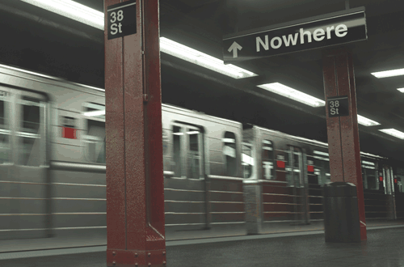
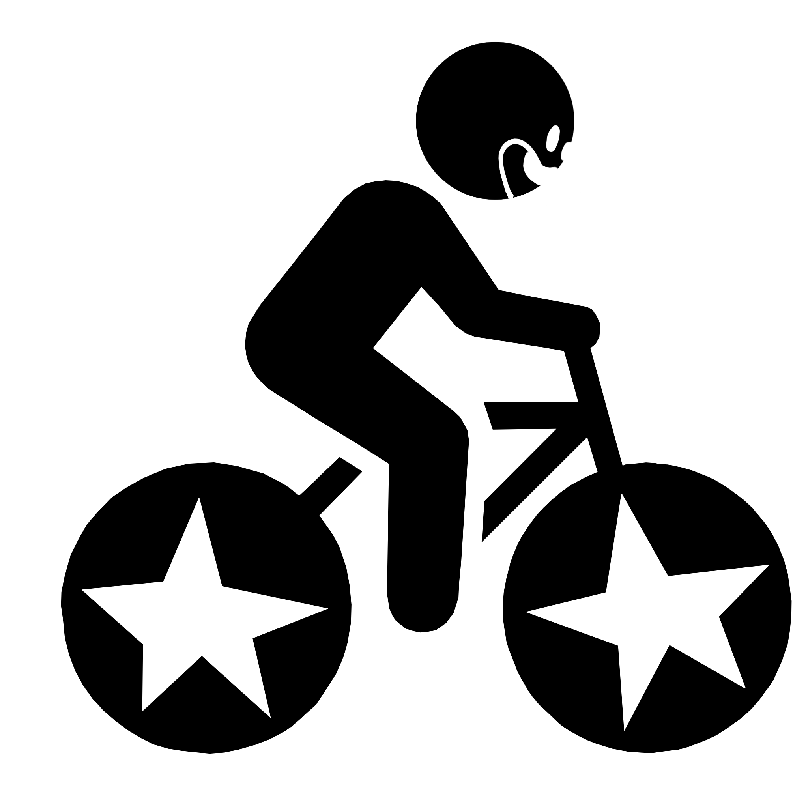

difficulty
⭐️⭐️⭐️
No

Yes,
Bike!
So far, I have tried many things I don't usually do or not my specialised area. Today,
it's the biking turn! This challenge might not be challenging at all for the New Yorkers,
but for me, who never bike in the city, this is terrifying.
I bike from Parsons building to my friend's house in Lower East Side. The map said it would
took only 13 minutes! That sounded great! But guess how long I ended up biking for to reach
the place..


p.s. I don't know how but It took me 1 hour to reach the place...